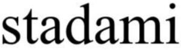

Trade Mark Journal No.2025/042 17 October 2025
WO0000001878661 (9,28,35,41)
Office of origin: Ukraine
Date of International Registration:6 December 2024
Date of designation in the UK:
6 December 2024

International priority date claimed: 17 September 2024
(Ukraine)
- Class 9
- Computer game software, downloadable; computer game software, recorded; computer programs, downloadable; computer programs, recorded; computer software, recorded; computer software applications, downloadable; downloadable software in the nature of a mobile application for communication on social networks and exchanging messages in groups on Internet networks; downloadable software in the nature of a mobile application for communication between participants and organizers of sport competitions; downloadable software in the nature of a mobile application for communication between coaches and athletes.
- Class 28
- Climbers' harness; tennis ball throwing apparatus; athletic supporters [sports articles]; golf bag tags; electric muscle stimulation bodysuits for sports; twirling batons; stationary exercise bicycles; golf bag trolleys; shuttlecocks; dumb-bells; exercise weights; yoga swings; needles for pumps for inflating balls for games; punching bags; darts; discuses for sports; dominoes; swimming kickboards; surfboards; sailboards; spring boards [sports articles]; chessboards; checkerboards; exercisers [expanders]; chest expanders [exercisers]; poles for pole vaulting; counters [discs] for games; abdomen protectors for sports; weight vests for physical training purposes; ascenders [mountaineering equipment]; protective paddings [parts of sports suits]; divot repair tools [golf accessories]; bladders of balls for games; rosin used by athletes; edges of skis; billiard cues; quoits; golf clubs; ice skates; roller skates; in-line roller skates; controllers for game consoles; cone markers for sports; dice; chalk for billiard cues; ski bindings; billiard balls; bowling balls; balls for playing boules games; paintballs [ammunition for paintball guns] [sports apparatus]; flippers for diving; skis; waterskis; surf skis; surfboard leashes; bows for archery; camouflage screens [sports articles]; ball pitching machines; billiard table cushions; knee guards [sports articles]; billiard cue tips; elbow guards [sports articles]; backgammon games; water wings; pumps specially adapted for use with balls for games; grip tapes for rackets; hoops for exercise incorporating measuring sensors; paddleboards; ski sticks; ski sticks for roller skis; protective cups for sports; paintball guns [sports apparatus]; swimming webs; horseshoe games; sole coverings for skis; weight lifting belts [sports articles]; adhesive abdominal exercise belts, electric, for muscle stimulation; swimming belts; harness for sailboards; archery implements; rackets; sling shots [sports articles]; billiard markers; rollers for stationary exercise bicycles; boxing gloves; baseball gloves; golf gloves; gloves for games; fencing gloves; roulette wheels; sleds [sports articles]; bob-sleighs; skeleton sleds; nets for sports; tennis nets; skateboards; snowboards; bar-bells; kick pads for martial arts; starting blocks for sports; billiard tables; tables for table tennis; rhythmic gymnastics ribbons; strings for rackets; gut for rackets; golf bags, with or without wheels; cricket bags; clay pigeons [targets]; waist trimmer exercise belts; body-building apparatus; machines for physical exercises; body-training apparatus; appliances for gymnastics; bowling apparatus and machinery; fencing weapons; fencing masks; foosball tables; hockey sticks; bags especially designed for skis; bags especially designed for surfboards; chess games; checkers [games]; seal skins [coverings for skis]; shin guards [sports articles]; masts for sailboards.
- Class 35
- Arranging and conducting of commercial events; providing business information via a website; providing business information; providing commercial and business contact information; providing user rankings for commercial or advertising purposes; compilation of information into computer databases; compilation of statistics; web indexing for commercial or advertising purposes; computerized file management; marketing; influencer marketing; marketing in the framework of software publishing; targeted marketing; updating and maintenance of data in computer databases; updating and maintenance of information in registries; search engine optimization for sales promotion; organization of exhibitions for commercial or advertising purposes; rental of advertising space; data processing services [office functions]; price comparison services; sales prospecting for others; media relations services; advertising; pay per click advertising; outdoor advertising; advertising by mail order; direct mail advertising; online advertising on a computer network; typing; bill-posting; distribution of samples; dissemination of advertising matter; development of marketing concepts; development of advertising concepts; promotion of goods and services through sponsorship of sports events; business management of sports people; retail services for sports equipment and related goods to it; advisory services for business management of sports sections.
- Class 41
- Arranging and conducting of congresses; arranging and conducting of workshops [training]; arranging and conducting of entertainment events; arranging and conducting of seminars; arranging and conducting of sports events; providing sports facilities; organization of sports competitions; advisory services relating to arranging of sports events.
Lobodiuk Dmytro Ihorovych
Siverchuk Mykhailo Stanislavovych
Representative: Bilotska Taisiia Vasylivna, pros. Leonida Kadenyuka, 8a, kv. 13, Kyiv 02105, UKRAINE